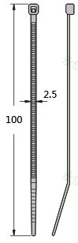
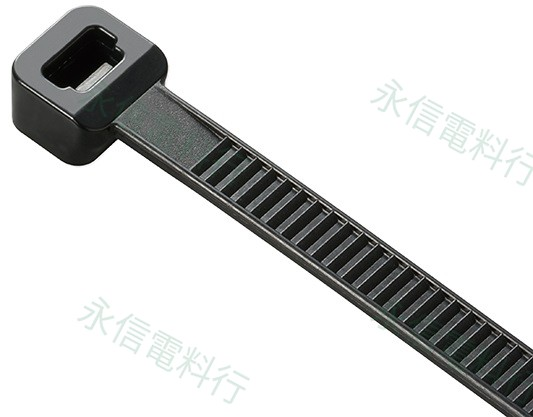
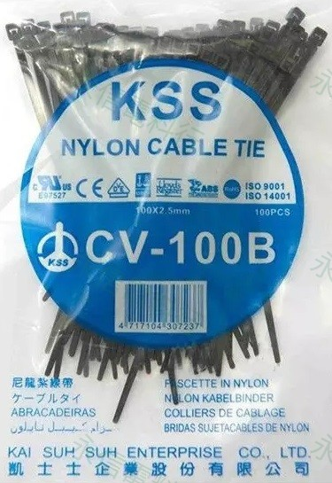

點選縮圖可切換商品照片；所有照片均已套用永信電料行浮水印。
尼龍束帶｜CV 系列
本頁依你提供的商品照片與資料夾名稱建立，供型號辨識及詢價核對使用。
採購前請再確認型號、長度、寬度、顏色與需求數量；材質、拉力、耐候或認證等未提供資料，本頁不自行補充。
CONFIRMED FROM PROVIDED MATERIAL
本頁未自行補充未經確認的拉力、材質等級、耐溫、耐候、認證、庫存或價格資訊。